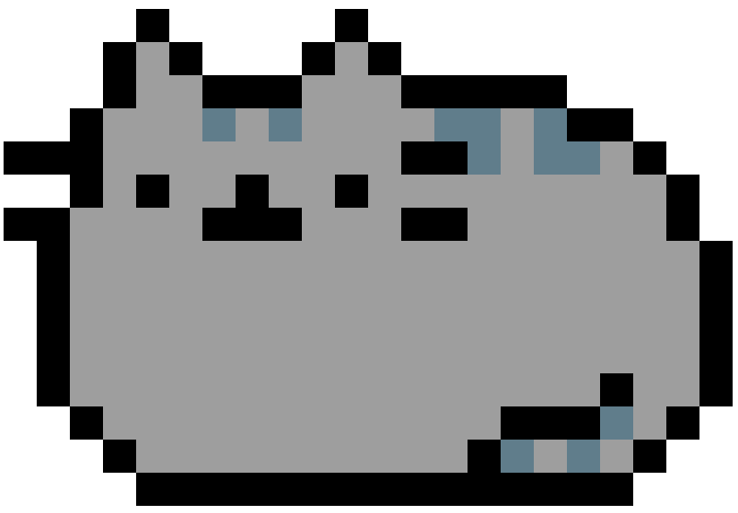
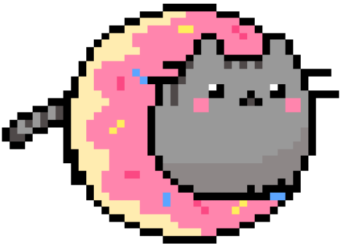

Hello there!
Welcome to meows & games -- a fun web app for cat fanatics!

If you think cats are interesting creatures and you'd like to learn more about them, our Cat Facts! database is a great place for you to start. You can peruse our database of cat facts, rate the ones you like by giving them a "paws up," and even add your own interesting cat facts!

Did you grow up with the classic Magic 8 Ball novelty toy? If so, you're already familiar with how to play our version, which is a game we like to call Magic Cat Ball. Don't worry if you never had the opportunity to play. It's easy! All you do is ask the cat a "yes" or "no" question and you'll get a somewhat reasonable answer based on how the cat is feeling today.

If a feline-esque twist on another classic game intrigues you, check out our version of tic-tac-toe: Meow-Tac-Toe! The first and primary player will play as a calico cat, and the secondary player will play as a ginger cat. Enjoy this twist on a classic family favorite!